Средняя группа (код: СР-3)
Программное обеспечение: Canva или PowerPoint; нейросеть, например DeepSeek
Цель: сделать заготовку для презентации / презентацию.
Пример: https://www.canva.com/design/DAHEM47dG-o/Q6Tgo0aFPxIUDv2cl1-_Pg/edit.
Чтобы включить показ на весь экран, нажми на кнопку Present сверху справа.
{kind=link}
{kind=link}
Учебная цель: вспомнить, как работать с тезисами, слайдами и представлением информации; нейросетями для генерации текста.
Задачи:
- Придумай тему своей презентации
-
Придумай тезисы. Можешь использовать помощь ИИ для этого, например DeepSeek
Например вот так можно попросить нейросеть помочь составить факты по какой-то теме:
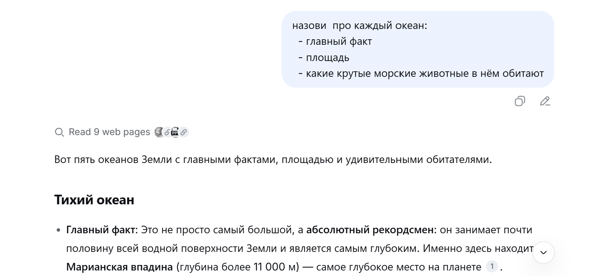
{kind=link}
Подсказки:
-
Для составления элементов слайда тебе понадобятся следующие панели:
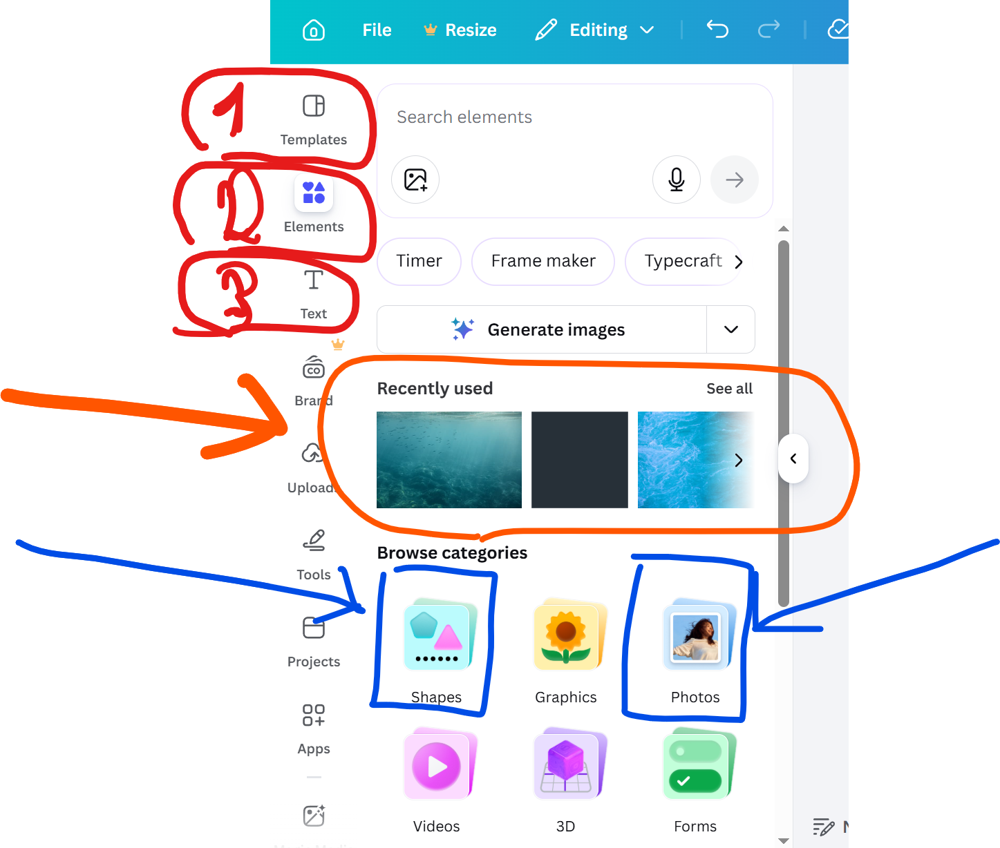
{kind=link}
Доказательство выполненного д/з: ссылка на презентацию / скриншоты или видео слайдов презентации / файл презентации / устное объяснение, как сделал. 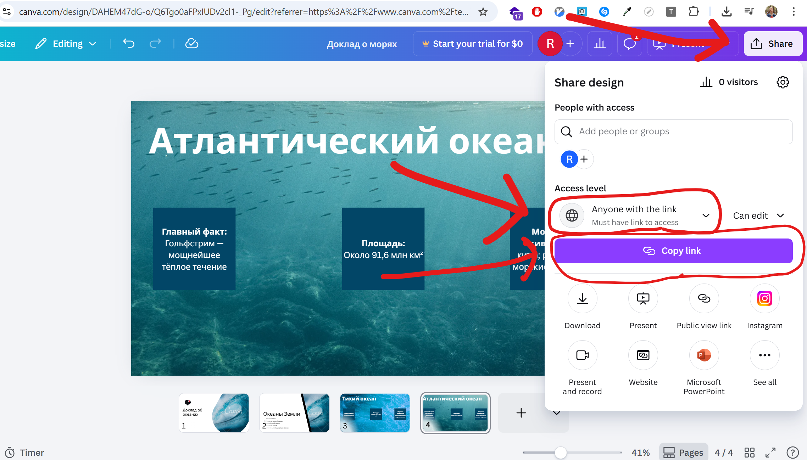
Чтобы сделать ссылку, воспользуйся подсвеченными кнопками:
{kind=link}
Прошлое д/з (код: СР-2)
Программное обеспечение: Google Таблицы
Цель: сделать таблицу.
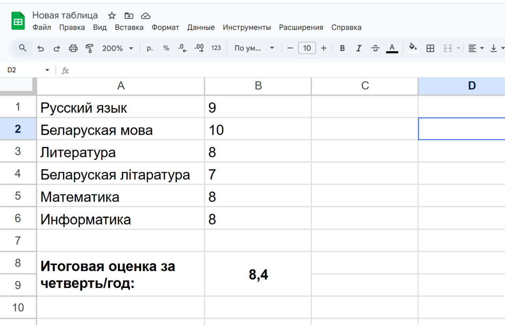
Учебная цель: вспомнить, как работать с ячейками, строками и столбцами, формулами.
Задачи:
- Сделай таблицу, как на картинке сверху. Необязательно точь-в-точь, но нужна похожая структура: заполненные строки и формула.
- Используй формулы, чтобы вычислять среднее арифметическое значение по оценкам за период + округлять.
Подсказки:
-
Создать новую таблицу:
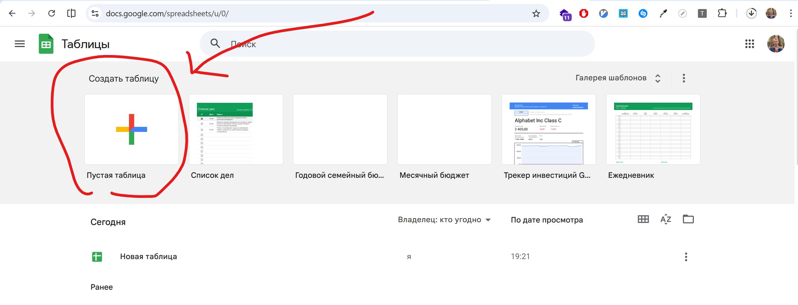
-
Чтобы объединять ячейки, нажимай на эту иконку:
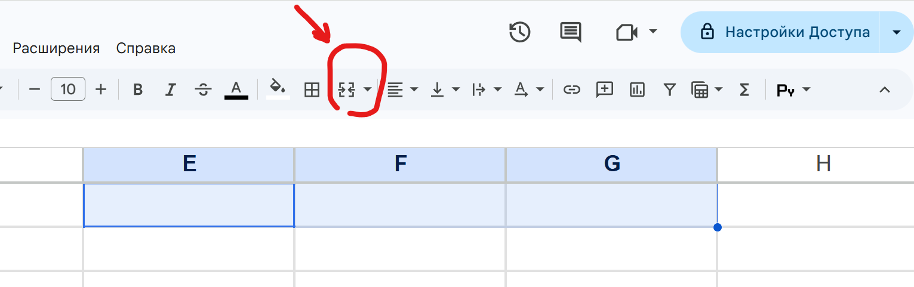
-
Чтобы управлять переносом строк, нажимай на эту иконку:
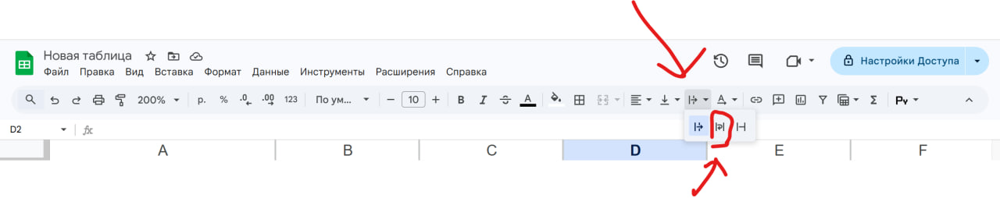
-
Не забывай про знак "равно" (=), чтобы посчитать сумму (сделать формулу):
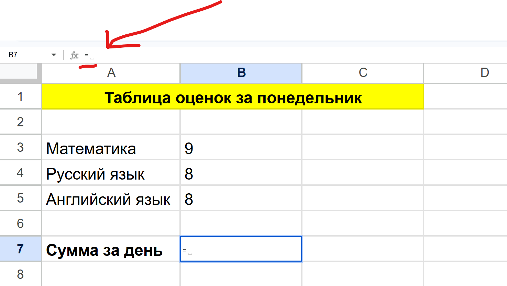
-
Формула в Гугл Таблицах, чтобы посчитать среднее арифметическое: AVERAGE;
Формула в Гугл Таблицах, чтобы округлить: ROUND.
Формула в Экселе, чтобы посчитать среднее арифметическое: СРЗНАЧ;
Формула в Экселе, чтобы округлить: ОКРУГЛ.
В таблице тебе понадобится выделить ячейки, где находятся оценки.
{kind=link}
{kind=link}
{kind=link}
{kind=link}
Доказательство выполненного д/з: ссылка на таблицу / скриншот таблицы / устное объяснение, как сделал. 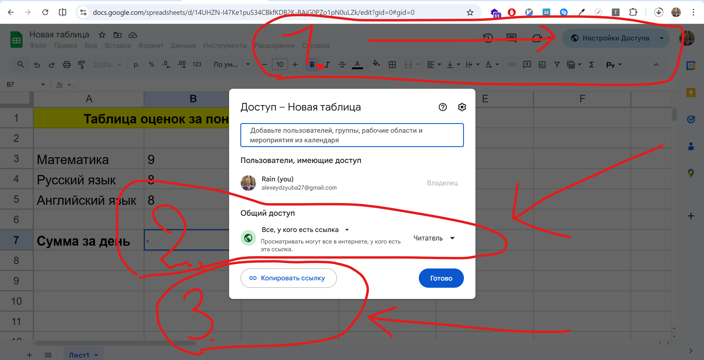
Чтобы сделать ссылку, воспользуйся кнопкой (1) и меню (2):
{kind=link}
Прошлое д/з (код: СР-1)
Программное обеспечение: Google Таблицы
Цель: сделать таблицу.
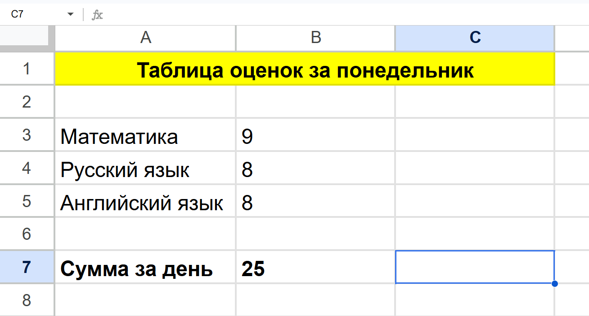
Учебная цель: вспомнить, как работать с ячейками, строками и столбцами, формулами.
Сделай таблицу, как на картинке сверху. Необязательно точь-в-точь, но нужна похожая структура: заголовок и заполненные строки.
Подсказки:
-
Создать новую таблицу:
-
Чтобы объединять ячейки, нажимай на эту иконку:
-
Не забывай про знак "равно" (=), чтобы посчитать сумму (сделать формулу):
В таблице из образца понадобятся ячейки с координатами: B3, B4, B5. А тебе нужно использовать ячейки с координатами из твоей таблицы.
Доказательство выполненного д/з: ссылка на таблицу / скриншот таблицы / устное объяснение, как сделал.
Чтобы сделать ссылку, воспользуйся кнопкой (1) и меню (2):
Прошлое д/з (код: М-3)
Программное обеспечение: Scratch
Цель: сделать игру – "Отбей мяч".
Учебная цель: вспомнить, как работать с [плыть], [выдать случайное], клонами.
Запрограммируй игру согласно видео. Подсказки:
-
Можешь пользоваться шпаргалкой – https://rainlab.by/ko/base/scratch.html.
-
Как главного героя удобно выбрать готовый 16-ый спрайт – Batter; мяч - в поиске введи "ball" и выбери любой.
-
Алгоритм появления мячей:
- Повторять 10 раз:
- создать клон самого себя
- ждать 3 секунды
- в другом скрипте использовать блок [когда я начинаю как клон]
-
Чтобы запрограммировать движение мяча в случайную точку, воспользуйся зелёным блоком [выдать случайное от () до ()].
-
Чтобы запрограммировать движение главного героя, можно воспользоваться этим блоком из секции Сенсоры и выбрать нужную клавишу, например английские буквы w и s:
-
Вместо [когда зел. флаг нажат] удобнее использовать клавишу Пробел.
{kind=link}
Доказательство выполненного д/з: скриншот программы (скрипта) главного героя и Мяча / устное объяснение, как сделал.
Прошлое д/з (код: М-2)
Программное обеспечение: Scratch
Цель: сделать игру – "Поймай мяч".
Учебная цель: вспомнить, как работать с движением по x/y и [плыть].
Запрограммируй игру согласно видео. Подсказки:
-
Можешь пользоваться шпаргалкой – https://rainlab.by/ko/base/scratch.html.
-
Как главного героя удобно выбрать готовый второй спрайт – Amon; мяч - в поиске введи "ball" и выбери любой.
-
Чтобы запрограммировать движение мяча в случайную точку, воспользуйся зелёным блоком [выдать случайное от () до ()].
-
Вместо [когда зел. флаг нажат] удобнее использовать клавишу Пробел.
Доказательство выполненного д/з: скриншот программы (скрипта) главного героя и Мяча.
Прошлое д/з (код: М-1)
Программное обеспечение: Scratch
Цель: сделать заклинание для Ученицы – яблочное исчезновение.
Учебная цель: вспомнить, как работать с движением и сообщениями (событиями/сигналами).
Запрограммируй игру согласно видео. Подсказки:
-
Чтобы найти Волшебника и Ученицу, выбери спрайт в самом конце списка:
-
Не забудь отзеркалить Ученицу:
{kind=link}
{kind=link}
Доказательство выполненного д/з: скриншот программы (скрипта) Яблока.
Прошлое д/з (код: ИФ-8)
Программное обеспечение: Scratch
Цель: сделать игру с элементом случайности – два коня наперегонки добираются до финиша.
Учебная цель: вспомнить, как работать с Игрой и событиями (сигналами).
Запрограммируй игру согласно видео. Подсказки:
- Чтобы найти картинку для Коня, начни вводить на английском слово "Horse".
- Финиш можешь нарисовать сам либо скачать, нажав сюда. Также для красоты рекомендую в объекте Финиш единожды достать и нажать блок из секции "Внешний вид" – "перейти на [задний] слой".
-
Тебе понадобится понятие скорости для каждого коня. Это можно сделать с помощью создания переменной в секции "Переменные".
Также при создании нужно выбрать "Только для этого спрайта".
Если возникают проблемы с переменной "скорость" у другого коня, попробуй у проблемного коня удалить эту переменную и создать заново.
Также обращай внимание, чтобы у каждого коня была своя отдельная скорость, а не общая – нам нужен элемент случайности в игре. - Чтобы сделать скорость случайной, используй блок из секции "Операторы" – "выдать случайное от [] до []".
-
Чтобы проигравший конь останавливался, можно использовать вот такой скрипт:
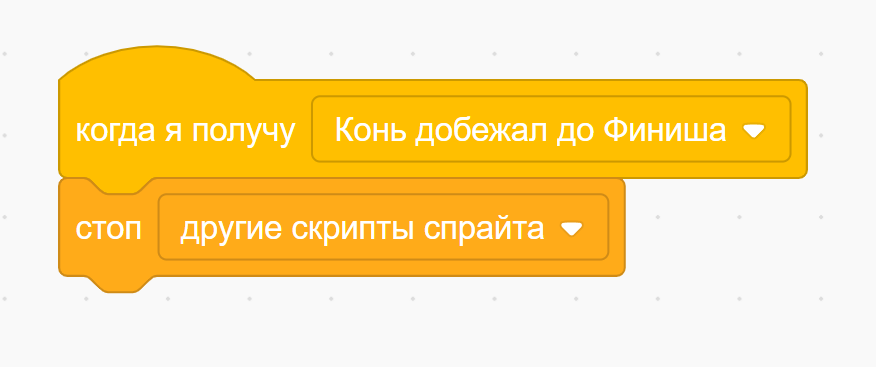
{kind=link}
{kind=link}
Доказательство выполненного д/з: скриншот программы (скрипта) Коня.
Прошлое д/з (код: ИФ-7)
Программное обеспечение: Scratch
Цель: сделать мульфильм – дайвер подплывает к рыбкам, они пугаются и начинают двигаться.
Учебная цель: вспомнить, как работать с Игрой (Мульфильмом) и событиями (сигналами).
Запрограммируй мульфильм согласно видео. Подсказки:
-
Фон можно выбрать справа снизу в панели "Сцена" - нажимаем на панель, потом иконку снизу, потом на увеличительное стекло, и можно выбрать фон "Underwater";
Спрайты (костюмы) объектов ищутся в поиске по словам: Дайвер – "Diver", Рыбка – "Fish". -
Код (блоки) Мульфильма:
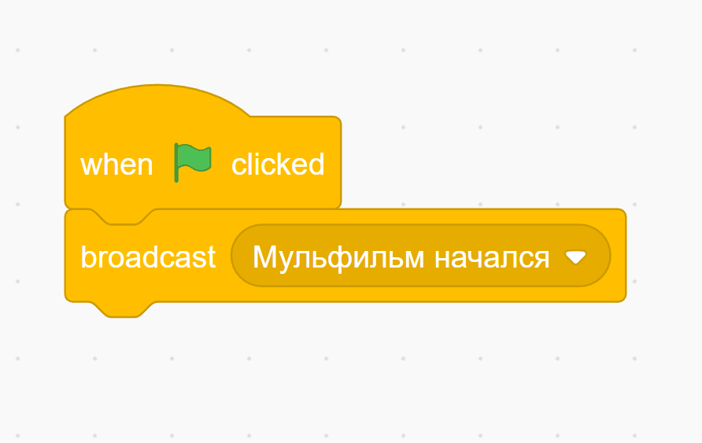
-
Вместо блоков цикла и движения шагами можно использовать блок "Плыть", например, так:
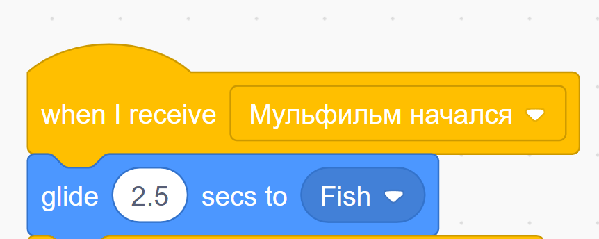
Обрати внимание, что в этом блоке можно указывать, к какому объекту плыть, а также плыть в случайном направлении - Если Рыбки возвращаются к Дайверу – ничего страшного – это нормальное поведение программы.
{kind=link}
{kind=link}
Нажми сюда, чтобы увидеть подсказку-спойлер с полным скриптом Дайвера (жми сюда только если прям совсем не получается):
{kind=link}
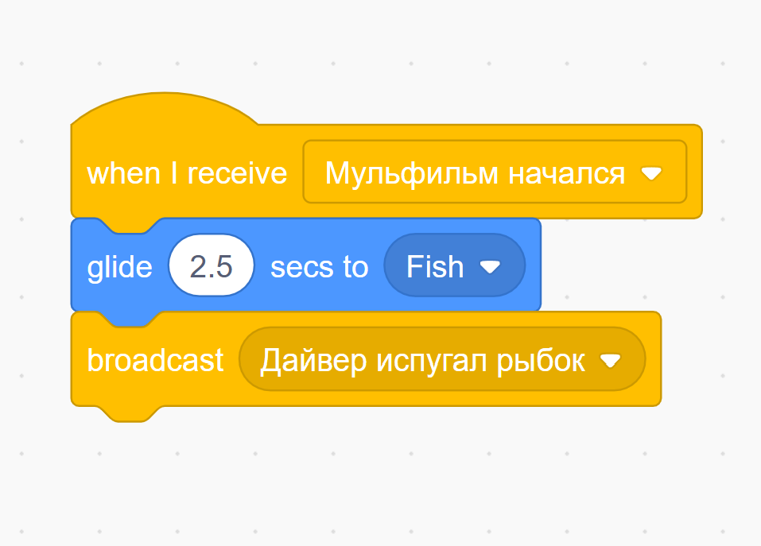
Доказательство выполненного д/з: скриншот программы (скрипта) Дайвера и какой-нибудь Рыбки
Прошлое д/з (код: ИФ-6)
Программное обеспечение: Scratch
Цель: сделать мульфильм.
Учебная цель: вспомнить, как работать с Игрой и событиями (сигналами).
Запрограммируй мульфильм согласно видео. Подсказки:
- Фон можно выбрать справа снизу в панели "Сцена" - нажимаем на панель, потом иконку снизу, потом на увеличительное стекло, и можно выбрать фон "Blue Sky"
-
Код (блоки) Игры:
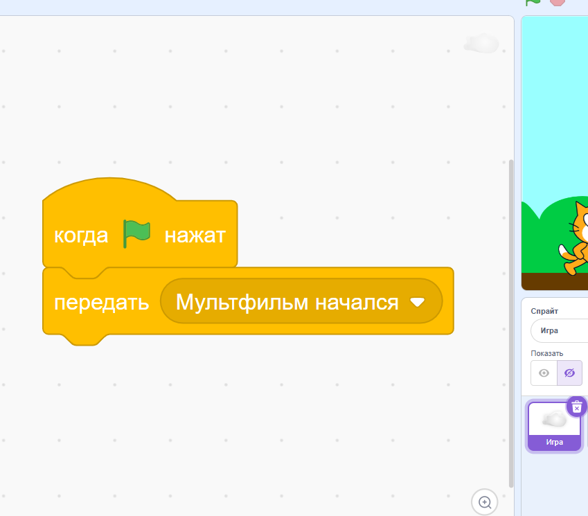
- Вместо блока "Говорить" используем блок "Говорить 2 секунды"
-
Медведь:
- вместо блока "идти 10 шагов" используем блок "изменить х на (какое-то число)"
-
чтобы отзеркалить спрайт Медведя, используем вот эту кнопку в интерфейсе "Костюмы":
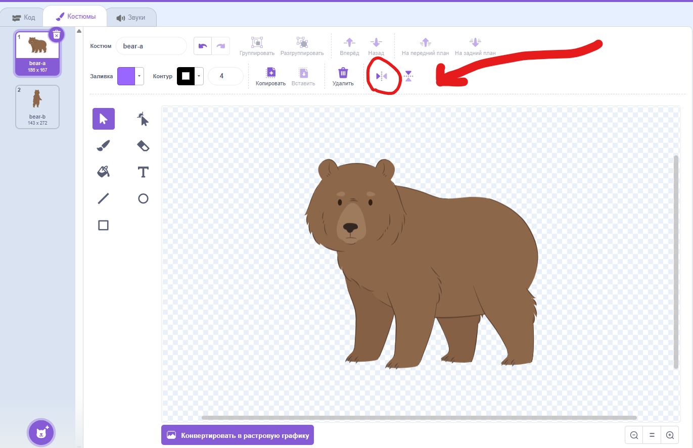
{kind=link}
{kind=link}
Доказательство выполненного д/з: скриншот программы (скрипта) Кота и Медведя
Прошлое д/з (код: ИФ-5)
Программное обеспечение: Scratch
Цель: сделать кота, который бегает за указателем мыши.
Учебная цель: вспомнить, как работать с движением.
Запрограммируй:
- ожидание перед запуском программы в 3 секунды
- движение кота за указателем мыши
- чтобы кот говорил "Догнал!", когда дотрагивается до указателя мыши
Доказательство выполненного д/з: скриншот программы (скрипта) кота
Прошлое д/з (код: КА-1)
Программное обеспечение: сайт pravo.by
Задача: прочитать статью о кибербезопасности.
Учебная цель: вспомнить и узнать новые понятия в кибербезопасности.
Задачи:
- Перейди по ссылке на статью сайта pravo.by
- Прочитай, изучи новые понятия в кибербезопасности
- Доказательство выполненного д/з: будь готов кратко пересказать, что нового ты изучил после прочтения статьи
Прошлое д/з (№ -1)
Программное обеспечение: Canva
Задача: сделать оглавляющий слайд.
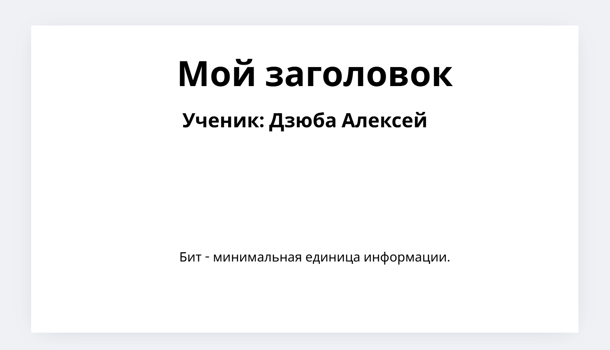
Цель: повторить работу с текстовыми элементами.
Задачи:
- Зайди на сайт онлайн-конструктора презентаций и дизайнов – Canva
- Нажми на кнопку вначале "Start designing for free" ("Начни создавать бесплатно")
- Зарегистрируйся: с помощью имейла (на имейл придёт код, который надо будет ввести в Canva), или своего аккаунта в Google, или каким-то другим способом
-
Далее нажми на кнопку Create:
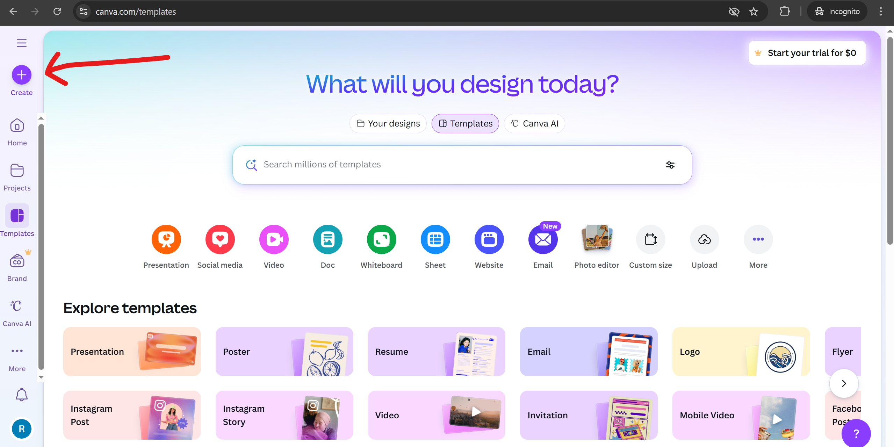
-
Выбери Presentation
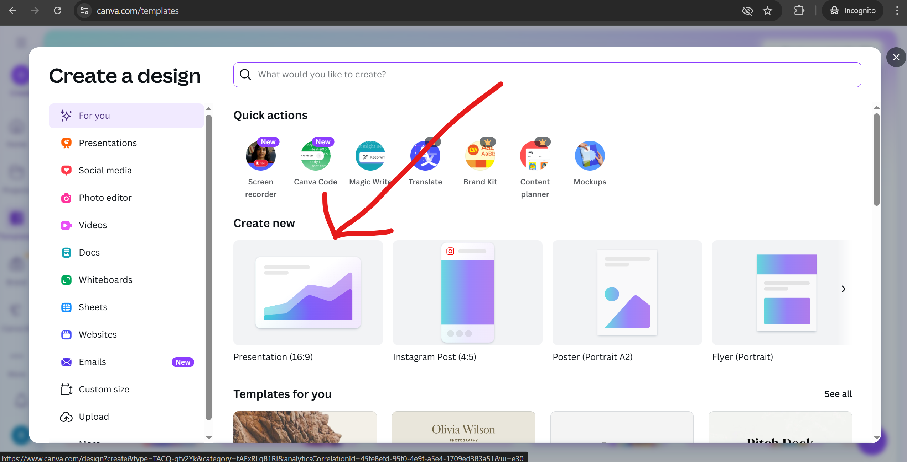
- Слева выбери секцию "Text", выбирай нужные текстовые элементы и составь слайд
- Доказательство выполненного д/з: просто скриншот этого слайда
Прошлое д/з (№ -2)
Программное обеспечение: Kodu Game Lab (нужно установить)
Задача: сделать игру.
Цель игры: отстреливаться от противников, которые идут на нас. Камера - от первого лица. Противники появляются в случайное время между 3-мя и 10-ью секундами.
Подсказки:
- В качестве игрока можно использовать объект "Задвижка"
- Для камеры от 1-го лица надо использовать в меню "Видеть" — "1 игрок"